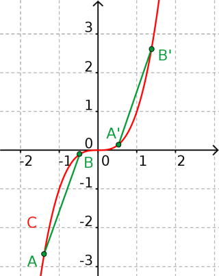

Définitions : Soit $f$ une fonction et $C$ sa courbe représentative dans un repère orthonormé. Un point $A(x_A; y_A)$ est un point d'inflexion de la courbe $C$ si la fonction $f$ change de convexité en $a$.
Exemple ¹ :
La fonction cube est concave sur $] - \infty ; 0]$ et convexe sur $[0 ; \infty[$.
Elle admet donc un point d'inflexion $O(0;0)$.

Propriété 1 : Soit $f$ une fonction deux fois dérivable et $C$ sa courbe représentative. Les quatre affirmations ci-dessous sont équivalentes.
Propriété 2 : Soit $f$ une fonction deux fois dérivable et $C$ sa courbe représentative. Les quatre affirmations ci-dessous sont équivalentes.